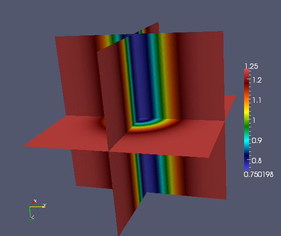

Test drivers¶
Analytical velocity models¶
Uniform¶

Gaussian perturbation¶
Wave guide¶
Two layers¶
Cavity¶

Reverse cavity¶

Top half of cavity¶

Bottom half of cavity¶

Increasing layers¶
Decreasing layers¶
Sideways layers¶
Wedge¶

Random¶

UnitCube¶
This section describes the driver tests/UnitCube.cpp, which is designed for quickly testing the performance of the sweeping preconditioner on a variety of different velocity models.
TODO
Interpolate¶
The tests/Interpolate.cpp driver is meant to exercise the routine DistUniformGrid<F>::InterpolateTo(), which provides a means of linearly interpolating a velocity model into a different grid size in parallel.
TODO